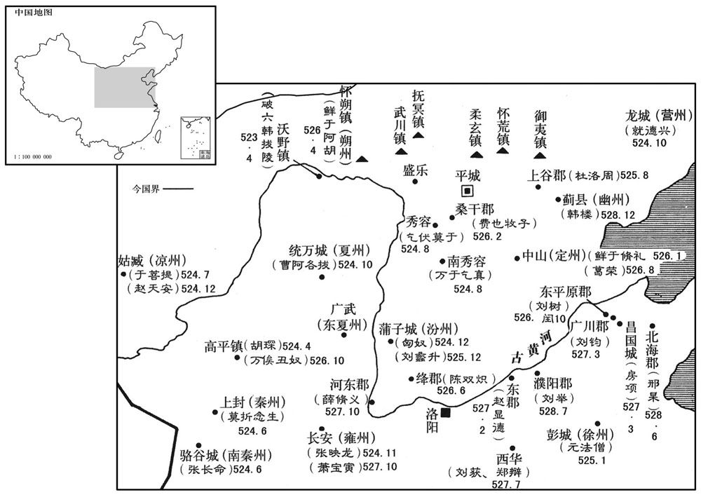

公元20年资治通鉴：本年记事、原文与白话对照
按原书编年位置阅读；追叙和史论不等于本年发生的事件。白话采用所据译本，缺译不以生成译文补齐。
卷38 · 本年记事
公元20年 · 汉孝平皇帝地皇元年
地皇元年〔（庚辰、二○）〕
上传原文的注释括号有异常，字符原样保留；无法可靠划分的段落默认全文显示。
本年事件索引（现代整理）

本年形势与背景参考图

本年形势与背景参考图

本年形势与背景参考图

本年形势与背景参考图
春，正月，乙未，赦天下；改元曰地皇，从三万六千岁历号也。
春季，正月乙未（疑误），大赦天下，根据三万六千年日历，改年号为“地皇”。
莽下书曰：「方出军行师，敢有趋讙犯法者辄论斩，毋须时！」〔师古曰：趋讙，谓趋走而讙哗也。须，待也。讙，许元翻。〕于是春、夏斩人都市，百姓震惧，道路以目。〔韦昭曰：不敢发言，以目相眄而已。〕
王莽下文告说：“正当出兵行军的时候，敢有奔跑吵闹触犯法律的，就判处杀头，不要等到行刑季节！”于是春季、夏季都在都市里杀人，百姓震恐，路上相见只有以目示意，不敢交谈。
莽见四方盗贼多，复欲厌之，〔复，扶又翻。师古曰：厌，音一叶翻。〕又下书曰：「予之皇初祖考黄帝定天下，将兵为大将军，内设大将，外置大司马五人，大将军至士吏凡七十三万八千九百人，士千三百五十万人。予受符命之文，稽前人，将条备焉。」于是置前、后、左、右、中大司马之位，赐诸州牧至县宰皆有大将军、偏、裨、校尉之号焉。〔州牧为大将军；卒正、连率、大尹为偏将军；属令、长为裨将军；县宰为校尉。〕乘传使者经历郡国，日且十辈，仓无见谷以给；〔师古曰：见，谓见在也。传，知恋翻。见，贤遍翻。〕传车马不能足，赋取道中车马，〔师古曰：于道中行者，即执取之以充事也。〕取办于民。
王莽看见四方盗贼很多，又想进行压制，再次下文告说：“我的皇初祖黄帝平定天下，自己统率军队担任大将军，内设大将，外设大司马五人，从大将军至士官共七十三万八千九百人，兵士一千三百五十万人。我接受符命的文辞，取法古人，将一一设置起来。”于是设置前大司马、后大司马、左大司马、右大司马、中大司马的职位，各州牧至县宰都赐予大将军、偏将军、裨将军、校尉的称号。乘坐驿站传车的使者经过各郡国，每天将近十批，仓库里没有现存的粮食供给，驾传车的马匹不够，就取于民间，征用路上的车马。
秋，七月，大风毁王路堂。〔莽改未央宫前殿曰王路堂。服虔曰：如言路寝也。路，大也。〕莽下书曰：「乃壬午餔时，有烈风雷雨发屋折木之变，〔餔，食也。餔时，食时也。或曰：餔，即晡时；日加申为晡。师古曰：烈风，烈暴之风。折，而设翻。〕予甚恐焉；伏念一旬，迷乃解矣。〔师古曰：先言烈风雷雨，后言迷乃解矣，盖取舜烈风雷雨弗迷以为言也。〕昔符命〔【章：十二行本「命」下有「文」字；乙十一行本同；孔本同；张校同；退斋校同。】〕立安为新迁王；临国洛阳，为统义阳王，议者皆曰：『临国洛阳为统，谓据土中为新室统也，宜为皇太子。』自此后，临久病，虽瘳不平。〔言疾虽有瘳，不能平复如其初也。〕临有兄而称太子，名不正。惟即位以来，阴阳未和，谷稼鲜耗，〔师古曰：鲜，少也。耗，减也。鲜，音先践翻。〕蛮夷猾夏，寇贼奸宄，〔夏，户雅翻。〕人民征营，无所错手足。〔师古曰：征营，惶恐不自安之意也。错，七故翻。〕深惟厥咎，在名不正焉。其立安为新迁王，〔服虔曰：安，莽第三子也。迁，音仙。莽改汝南新蔡曰新迁。〔师古曰：迁，犹仙耳，不劳假借音。〕临为统义阳王。」
秋季，七月，大风损毁了王路堂。王莽下文告说：“壬午（疑误）傍晚时，发生了暴风大雷雨毁坏房屋、摧折树木的变故，我对此非常恐惧。考虑十天，才解除了迷惑。从前符命文辞说要立王安为新迁王，让王临在洛阳建国，为统义阳王，大家都说：‘王临在洛阳建国为统义阳王，是说他据有全国的中心，是新朝的继承者，应当作皇太子。’从此以后，王临久病，后来虽然痊愈，但没有完全康复。王临有哥哥而称皇太子，名分不正。我登上皇位以来，阴阳不和，粮食减少，蛮族扰乱中国，盗贼奸邪捣乱，人民惶恐不安，不知道怎么办。深深地思考这些罪责，是由于名分不正。应当立王安为新迁王，立王临为统义阳王。”
莽又下书曰：「宝黄厮赤。〔服虔曰：以黄为宝，自用其行气也。厮赤，厮役贱者皆衣赤，贱汉行也。厮，音斯。〕其令郎从官皆衣绛。」〔从，才用翻。衣，于既翻。〕
王莽又下文告说：“黄色宝贵，红色轻贱，应当让郎官、侍从官都穿着深红色的衣服。”
望气为数者多言有土功象；九月，甲申，莽起九庙于长安城南，〔九庙，祖庙五，亲庙四。〕黄帝庙方四十丈，高十七丈，〔高，居傲翻。〕余庙半之，制度甚盛。博征天下工匠及吏民以义入钱谷助作者，骆驿道路；〔师古曰：骆驿，言不绝。〕穷极百工之巧；功费数百余万，卒徒死者万数。
很多观察云气的人都说出现了大兴土木的征象；九月甲申（疑误），王莽在长安城南兴建皇家九座祭庙。其中黄帝庙东西南北四方各长四十丈，高十七丈，其它祭庙只有黄帝庙的一半，规模十分宏伟。广泛征召全国工匠及捐助钱粮者，人马粮草在道路上络绎不断。九庙的设计与施工，都极尽各种工匠的持巧。支出数百万钱，而役夫丧生的有一万人左右。
是月，大雨六十余日。
从本月开始，倾盆大雨下了六十余日。
巨鹿男子马适求等谋举燕、赵兵以诛莽。〔师古曰：马适，姓也。求，名也。〕大司空士王丹发觉，以闻。莽遣三公大夫逮治党与，连及郡国豪桀数千人，皆诛死。封丹为辅国侯。
钜鹿郡男子马适求等人策划发动燕、赵等地的兵马来讨伐王莽，大司空的属吏王丹发觉后，将此事奏报。王莽派遣三公大夫去逮捕审讯马适求的党羽，牵连到各郡、各封国才能出众的人士几千人，都被处死。赐封王丹为辅国侯。
莽以私铸钱死及非沮宝货投四裔，〔事见上卷始建国二年。沮，在吕翻。〕犯法者多，不可胜行；〔胜，音升。〕乃更轻其法，私铸作泉布者与妻子没入为官奴婢，吏及比伍知而不举告，与同罪；〔师古曰：比，音频寐翻；又频脂翻。〕非沮宝货，民罚作一岁，吏免官。
王莽规定：凡是私自铸钱的处死；抨击败坏宝货的一律流放到四方遥远荒凉的地方。可是犯法的太多，多到无法执行。于是，把处罚减轻，私自铸钱的连同妻子儿女被收为官府的奴婢，官吏和邻居知道而不检举告发的同罪。散布谣言破坏钱币信誉的，平民罚做苦工一年，官吏免职。
太傅平晏死；以予虞唐尊为太傅。尊曰：「国虚民贫，咎在奢泰。」乃身短衣小蔵，乘牝马、柴车，藉，以瓦器饮食，〔师古曰：柴车，即栈车。藉，去蒲蒻也。蔵，古袖字。余按汉氏之盛，乘牸牝者禁不得会聚，至乡闾阡陌皆然。朝市之间，从可知矣。尊为上公而乘牝，亦以矫世也。〕又以历遗公卿。〔遗，于季翻。〕出，见男女不异路者，尊自下车，以象刑赭幡污染其衣。〔师古曰：赭幡，以赭汁渍巾幡。污，乌故翻。〕莽闻而说之，〔说，读曰悦。〕下诏申敕公卿：「思与厥齐；」〔师古曰：令与尊同此操行也。论语称孔子曰：见贤思齐，故莽云然。〕封尊为平化侯。
太傅平晏去世，任命予虞唐尊作太傅。唐尊说：“国家空虚，人民贫困，灾祸的根源在于奢侈过度。”于是身穿小袖短衣，乘坐母马拉的简陋车子，坐卧时用禾秆作衬垫，用瓦器作餐具，并将这些东西一一分赠给公卿。外出时，看到不分开走路的男女，唐尊自己下车，采用象征性的刑罚，拿红土水浸过的旗幡污染他们的衣服。王莽听到了，赞赏他的作法，下诏书告诫公卿：“希望你们同他一样。”赐封唐尊为平化侯。
汝南郅恽明天文历数，以为汉必再受命，上书说莽曰：〔恽，于粉翻。说，输芮翻。〕「上天垂戒，欲悟陛下，令就臣位。取之以天，还之以天，可谓知命矣！」莽大怒，系恽诏狱，踰冬，会赦得出。
汝南人郅恽深明天文星象与历法，认为汉王朝一定复兴，上书劝说王莽：“上天所以发生异象，是在想使陛下觉悟，使你回到臣僚的位置上。取之于天，应该交还给天，才算是知道天命。”王莽大怒，逮捕郅恽，下入诏狱，过了冬天，逢到赦免，才从狱中出来。